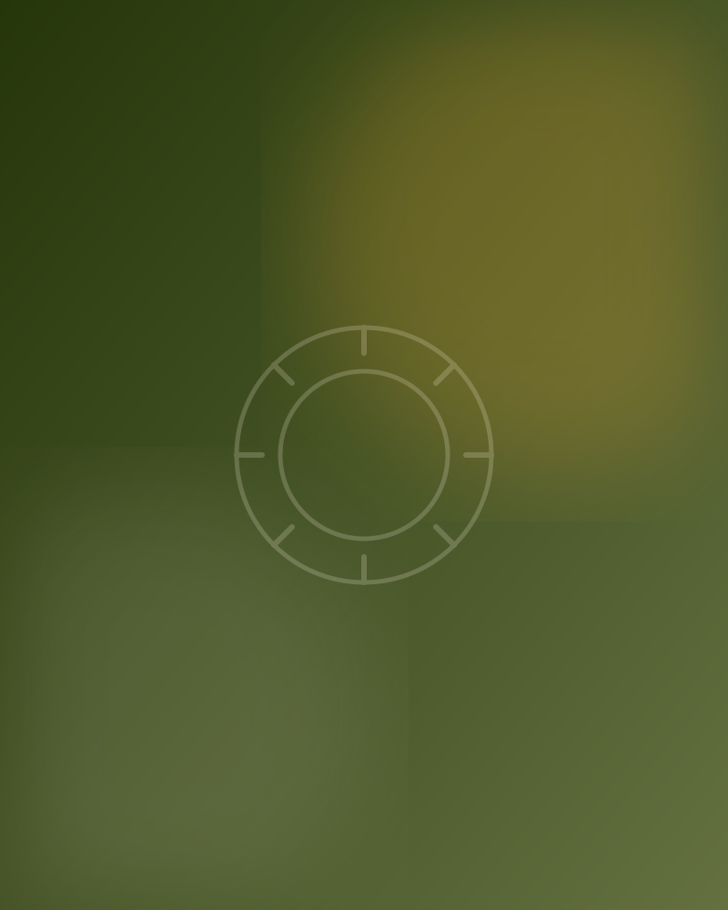
Fotografia espontânea & afetiva
Histórias que merecem
ser lembradas.
Fotografia espontânea, afetiva e cheia de verdade para transformar momentos especiais em memórias para toda a vida.
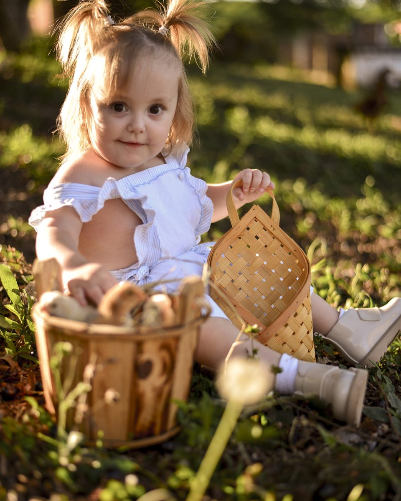
A Click Rural
Mais do que fotografias,
memórias.
A Click Rural nasceu para registrar aquilo que muitas vezes passa rápido demais: um sorriso, um abraço, uma descoberta, uma comemoração, um olhar ou simplesmente a alegria de ser criança.
A proposta é criar fotografias naturais, espontâneas e cheias de personalidade, preservando a essência de cada pessoa e de cada momento.
Ensaios Fotográficos intanfil com animais da fazenda
Cada ensaio
feito com carinho
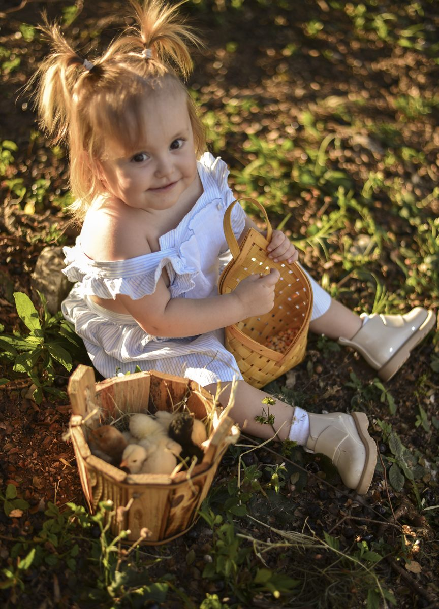
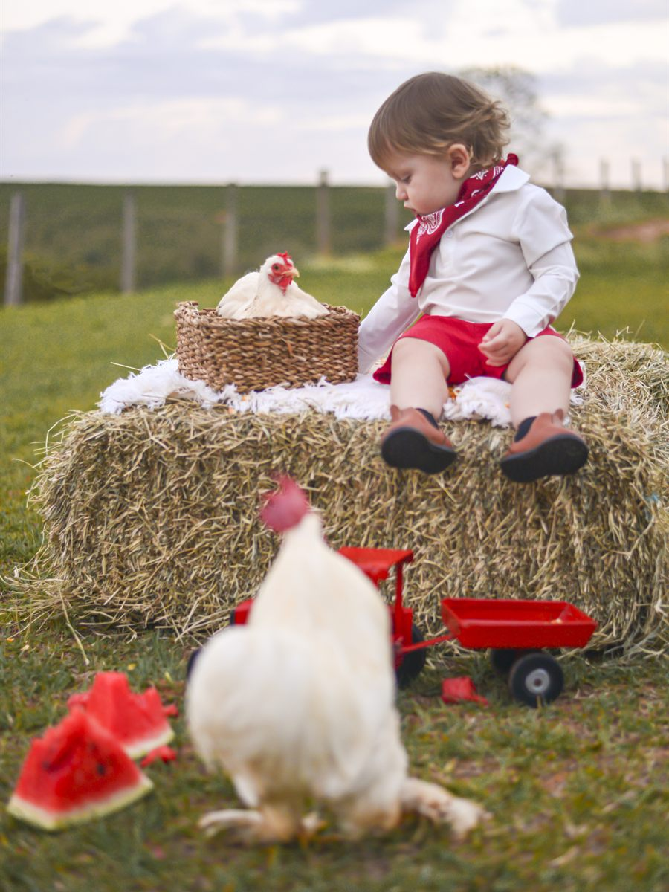
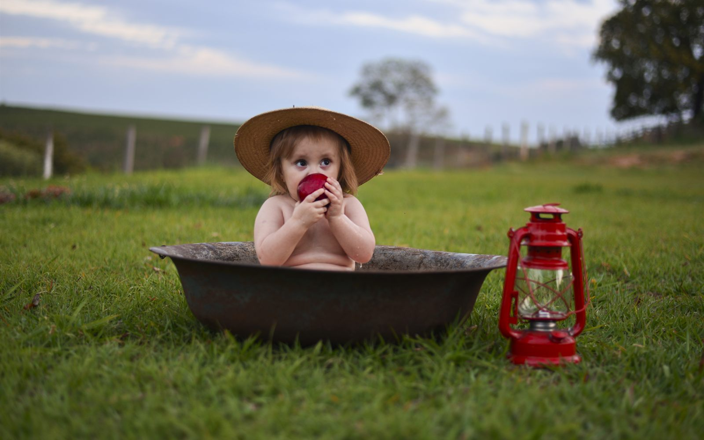
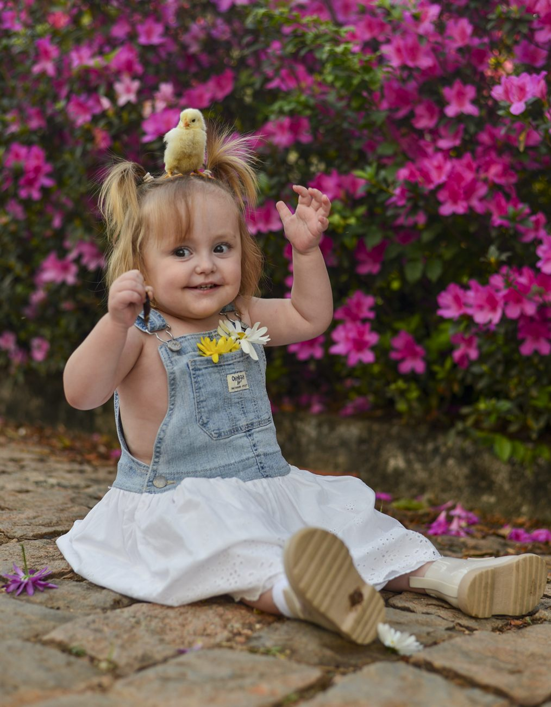
Infância
Pequenos momentos.
Grandes memórias.
Porque eles crescem rápido demais.
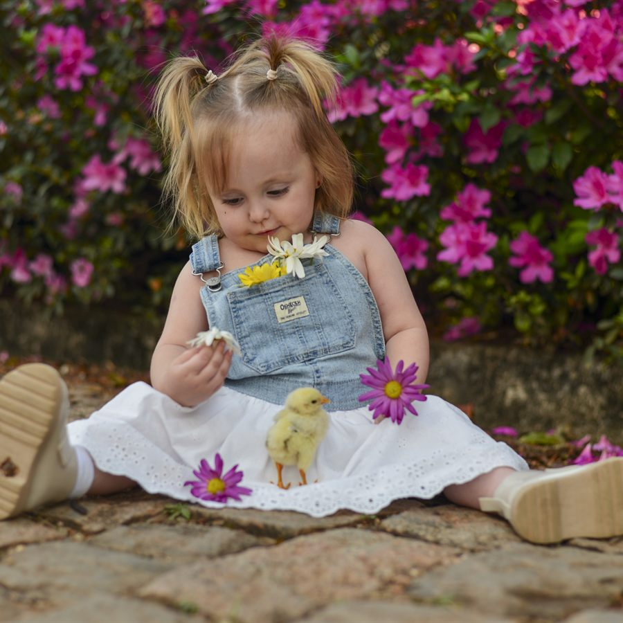
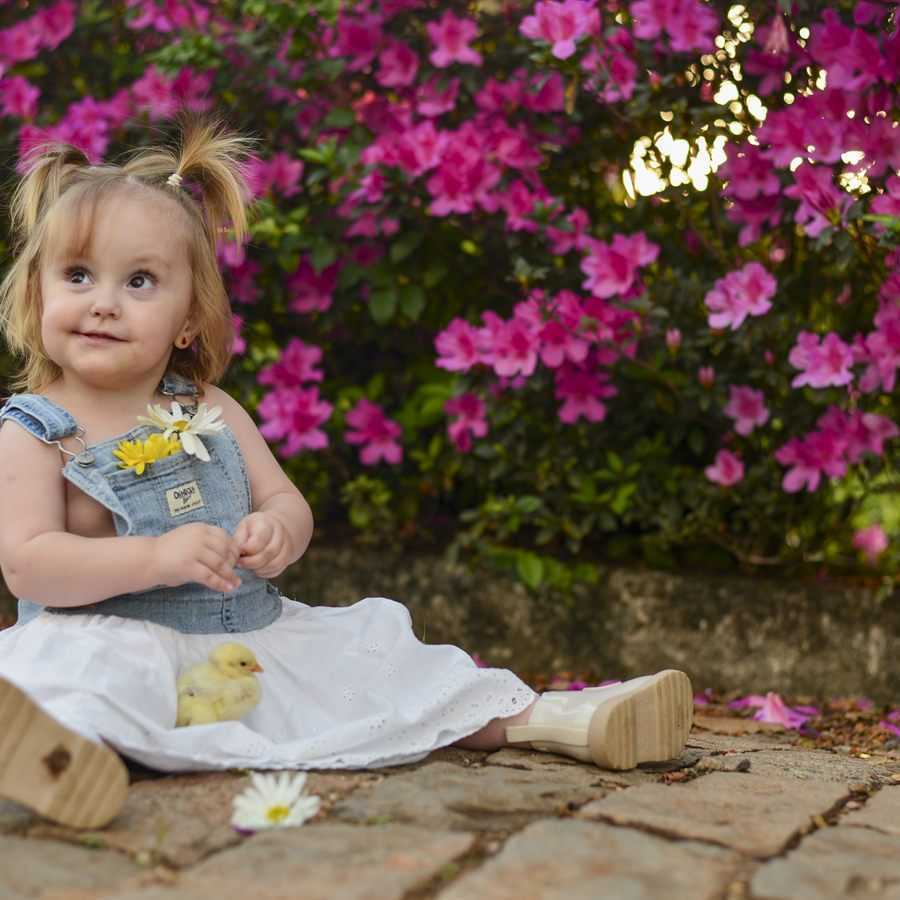
Com animais
E quando eles também
fazem parte da história?
Algumas memórias ficam ainda mais especiais quando nossos companheiros de quatro patas estão presentes.
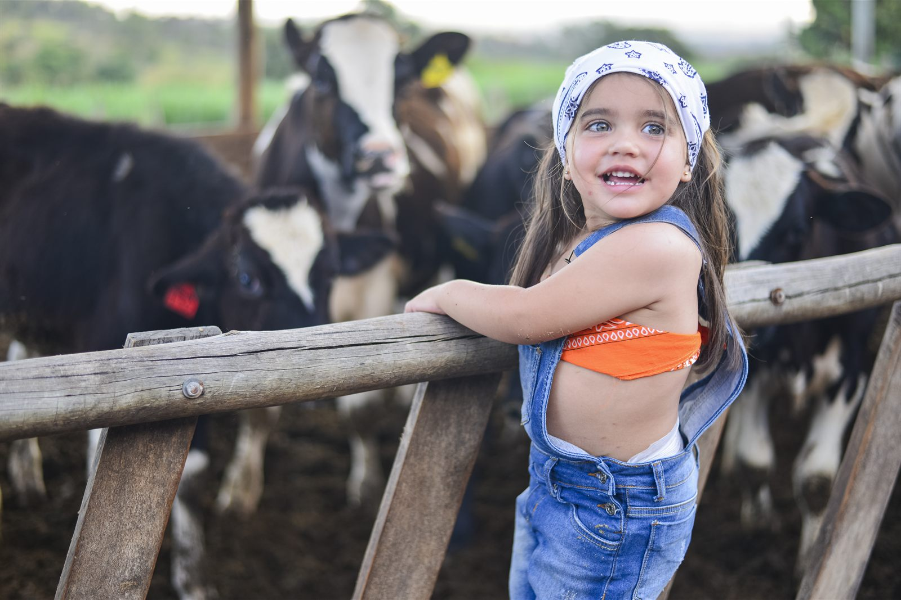
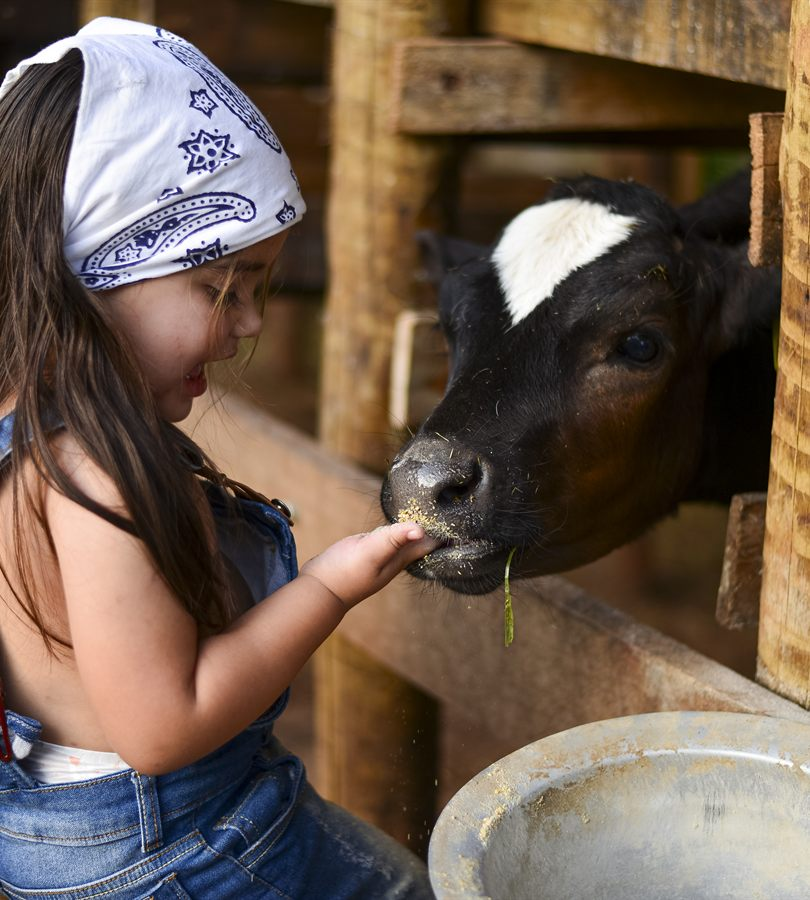
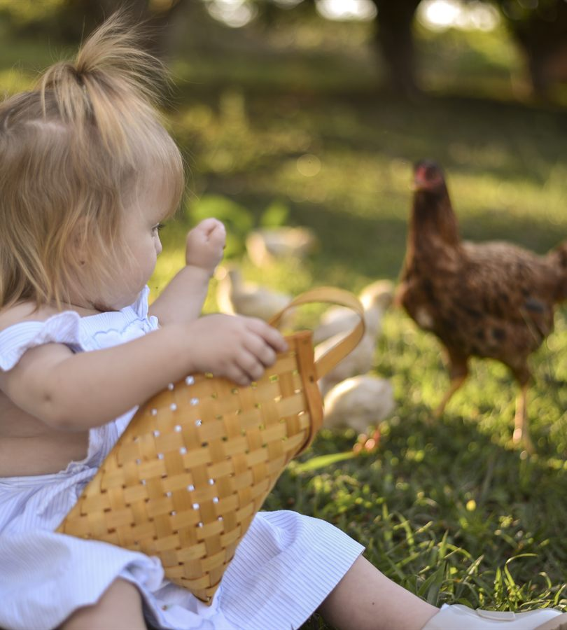
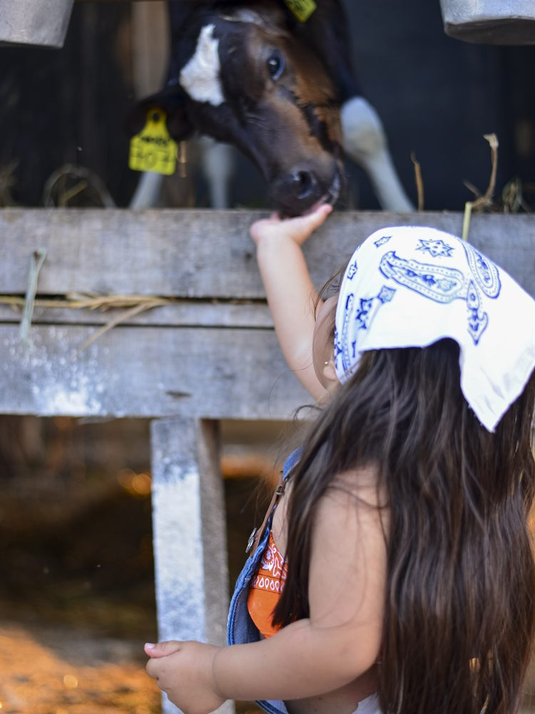
Memórias não precisam ser perfeitas.
Precisam ser verdadeiras.
Portfólio
Um pouco do meu olhar
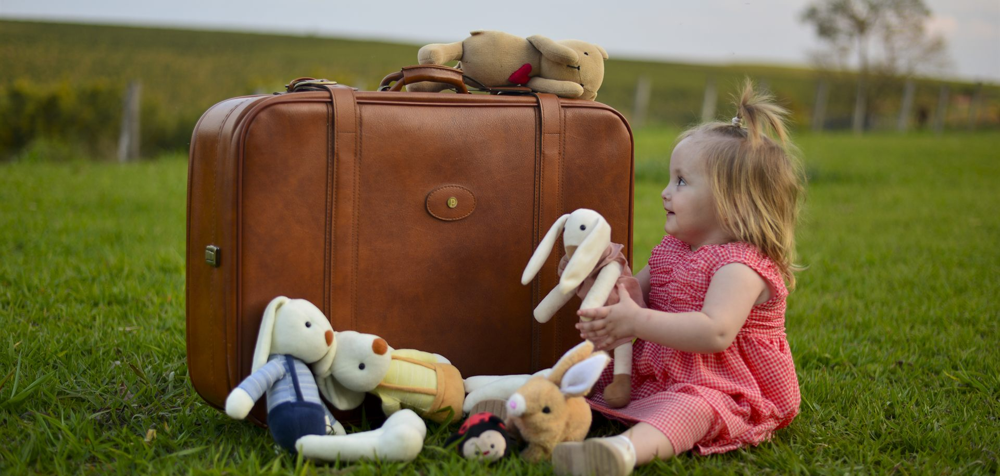
Cada clique guarda um pedacinho
daquilo que não volta.
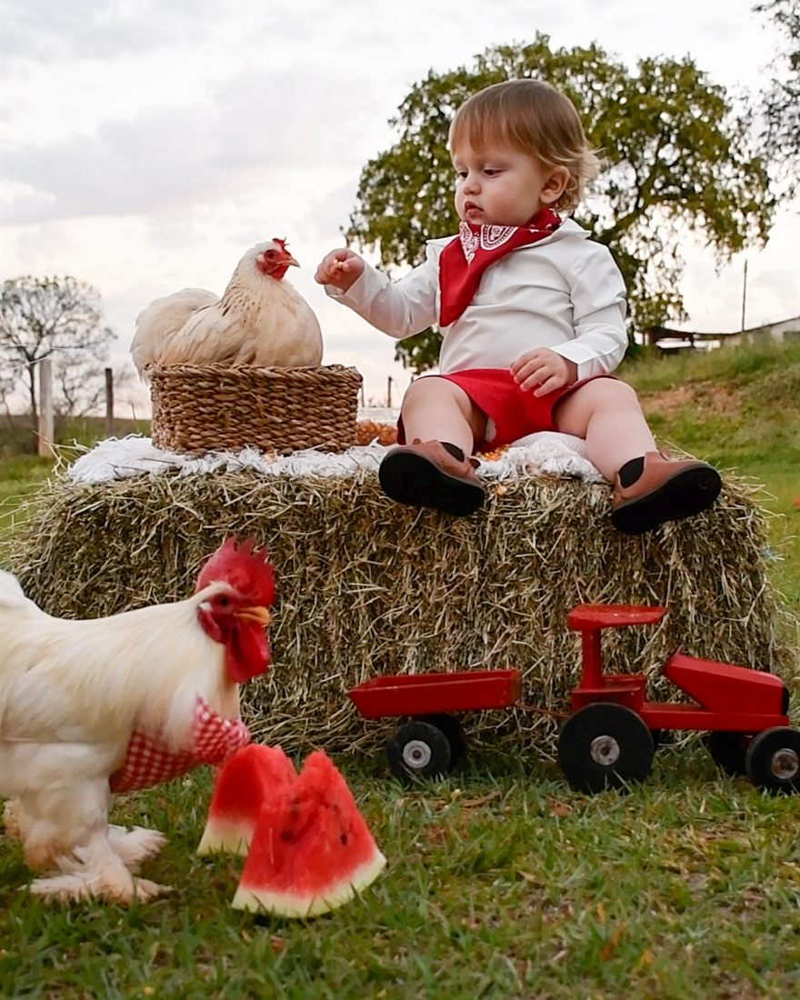
Sobre
Por trás da câmera
Oi, eu sou a Click.
Gosto de fotografar pessoas do jeito que elas realmente são — não do jeito que uma pose ensaiada manda ser. Acredito que fotografia não precisa ser perfeita para ser verdadeira; precisa apenas contar a história certa.
No trabalho, procuro expressões, personalidade, afeto e aqueles pequenos detalhes que passam despercebidos no dia a dia. Um olhar, um gesto, o abraço de um bicho de estimação: são esses instantes inesperados que eu mais gosto de guardar.
Alguns momentos passam em segundos. A fotografia faz com que eles possam voltar sempre que você quiser.
Conheça minha históriaComo funciona
Como acontece
Conversa
Entendemos o que você deseja registrar.
Planejamento
Definimos local, horário, estilo e todos os detalhes.
O momento
A sessão acontece de forma leve e natural.
Memórias
Você recebe fotografias cuidadosamente selecionadas e editadas.
Momentos compartilhados
Acompanhe mais histórias no Instagram.
Vamos guardar esse momento?
Se existe uma história que merece ser contada através de imagens, talvez seja a sua.
Contato
Vamos conversar?
Click Rural Fotografia
Conte um pouco sobre a data, o local e o que você gostaria de registrar — respondo o quanto antes.